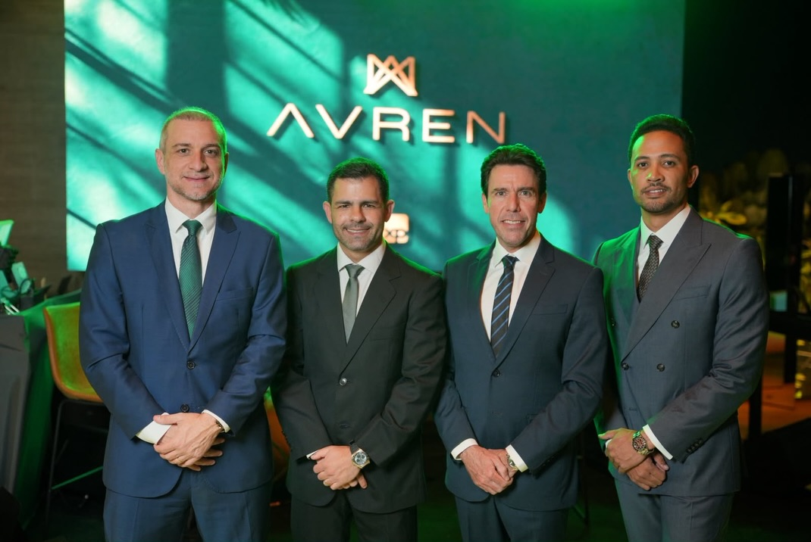
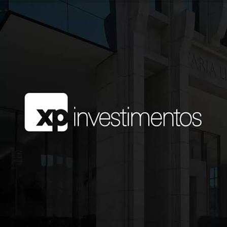

Portfólio Estratégico
Carteiras alinhadas ao perfil, momento e objetivos de cada cliente.
Saiba maisA AVREN é uma plataforma de inteligência patrimonial nascida em Brasília, com chancela XP Investimentos e mais de R$ 500 milhões sob gestão e assessoria.
Para empresários, investidores e famílias que tratam capital como construção de futuro.
A AVREN nasce para apoiar decisões patrimoniais relevantes com estratégia, discrição e visão de longo prazo.
Unimos inteligência financeira, acesso institucional e relacionamento próximo para empresários, investidores e famílias que enxergam patrimônio como responsabilidade, oportunidade e legado.
Saiba mais
A AVREN inicia sua trajetória com uma base rara para uma nova operação patrimonial: capital relevante, relações estratégicas e uma visão clara de expansão.
Mais que um número, esse marco representa confiança, tração e o início de uma mesa preparada para crescer em escala nacional.
A Mesa AVREN organiza capital, acesso e inteligência em uma experiência reservada para decisões patrimoniais de longo prazo.

A relação com a XP Investimentos amplia o acesso da AVREN a uma das principais estruturas do mercado financeiro brasileiro.
A partir dessa base, a AVREN entrega uma experiência mais próxima, estratégica e reservada para quem precisa tomar decisões patrimoniais com clareza.
A AVREN conecta patrimônio, inteligência, relações e visão de futuro em uma estrutura pensada para decisões consistentes.
Proteção, organização e expansão do capital.
Leitura de cenário, riscos e oportunidades.
Acesso a relações e soluções qualificadas.
Estratégia para continuidade e longo prazo.
Um processo reservado para entender, estruturar e acompanhar decisões patrimoniais relevantes.
Entendimento do momento, perfil, objetivos e prioridades do cliente.
Construção de uma visão patrimonial alinhada ao cenário e ao longo prazo.
Conexão com soluções, especialistas e oportunidades compatíveis com a estratégia.
Revisões estratégicas conforme mercado, objetivos e novas decisões.
Brasília não é apenas o endereço da AVREN. É o ponto de partida de uma estrutura criada no centro das decisões nacionais.
A partir dessa origem, a AVREN se posiciona para atender empresários, investidores e famílias que buscam estratégia, discrição e acesso qualificado em escala nacional.
A AVREN nasce conectada a empresários, investidores, grupos privados e lideranças com atuação relevante no mercado.
Esse movimento marca o início de uma plataforma patrimonial criada para crescer com consistência, reputação e visão de longo prazo.
Para quem busca proteger capital, ampliar oportunidades e tomar decisões com visão de futuro.
A AVREN nasce da união entre capital, relacionamento e visão estratégica. Por trás da plataforma, existe uma liderança comprometida em construir uma nova referência patrimonial: mais próxima, mais conectada e preparada para atuar em escala nacional.
Trajetórias conectadas ao mercado financeiro, empresários e investidores.
Acesso institucional com curadoria, proximidade e visão estratégica.
Construir uma plataforma patrimonial nacional, reservada e relevante.
Solicite uma reunião reservada para avaliar seu momento patrimonial, seus objetivos e as próximas decisões.